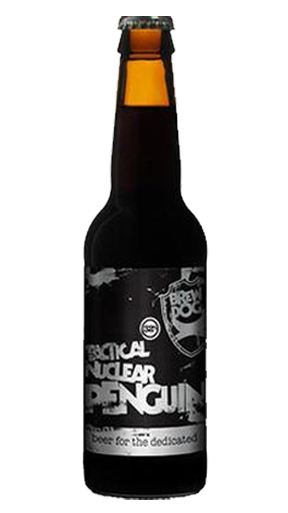
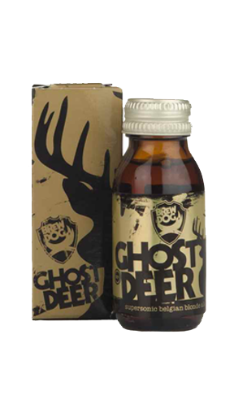
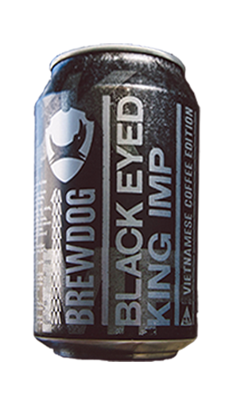
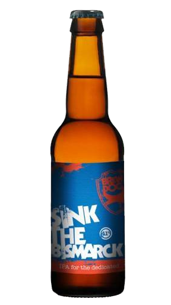
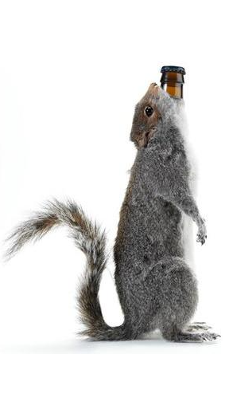

Tactical Nuclear Penguin 32%
When Tactical Nuclear Penguin was released in 2009, it was the world's strongest beer. The beer was put into containers and transported to the cold store of a local ice cream factory where it endured 21 days at penguin temperatures. Then the frozen liquids are removed to leave behind more alcohol - inspiring the name.
The boys say:
It's to be enjoyed in small servings, just like "a fine whisky, a Frank Zappa album or a visit from a friendly yet anxious ghost."
Ghost Deer 28%
Ghost Deer is a 28% fermented beer, the strongest ever fermented beer which, when first introduced, was only served from a handcrafted deer’s head tap. Later, the limited edition beer was sold in 60ml bottles.
The boys say:
"This schizophrenic delusional screw up of a drink is best enjoyed with vigilance and a dose of vagrant optimism."
Black Eyed King Imp 12.8%
BrewDog's Black Eyed King Imp is the world's strongest canned ale. This barrel-aged Imperial stout has taken inspiration from Vietnamese coffee - firstly it was matured in bourbon casks, before being aged further with vanilla pods and coffee beans. It packs a punch of intense coffee, chocolate and roasted malt notes.
The boys say:
"This beer is worth spending an afternoon over, allowing the flavours to develop and unravel while you discuss philosophy / become one with the universe / watch an entire box set of your choosing."
Sink the Bismarck 41%
In 2010, BrewDog released this strong beer in competition for the world's strongest beer. In a clear reference to its German competitor, it was named after the Nazis' largest battleship. At a 100 euros ($105) a bottle, it's also at least 40 times more expensive than a conventional beer.
The boys say:
"Sink the Bismarck! is beer, amplified. With the volume turned full up, it is important you that you be careful with this beer and show it the same amount of sceptical, tentative respect you would show an international chess superstar, clown or gypsy."
The End of History
Their last bow in the "world's strongest beer showdown, BrewDog also added a controversial visual touch to The End of History by encasing each beer in preserved roadkill. Only 12 bottles were initially made in 2010. New editions were released for a 2016 crowdfunding campaign. Supporters who invested $20,000 in the company were rewarded with this collector's item.
The boys say:
"This is to be enjoyed with a weather eye on the horizon for inflatable alcohol industry Nazis, judgemental washed up neo-prohibitionists or any grandiloquent, ostentatious foxes."